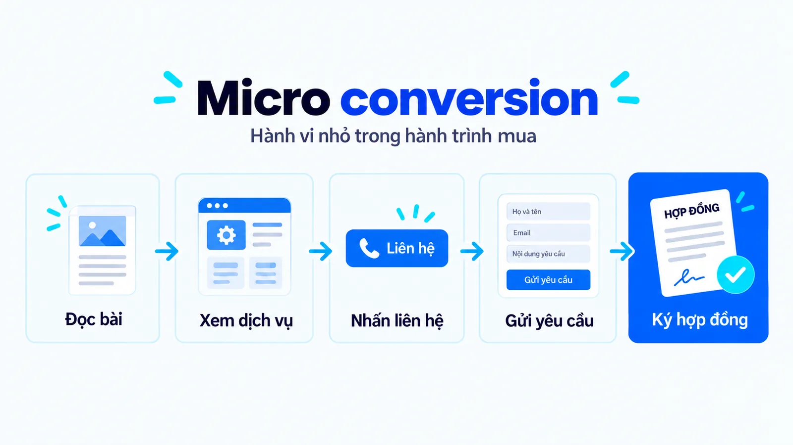
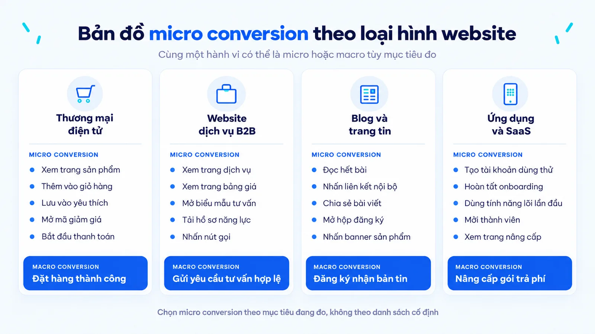
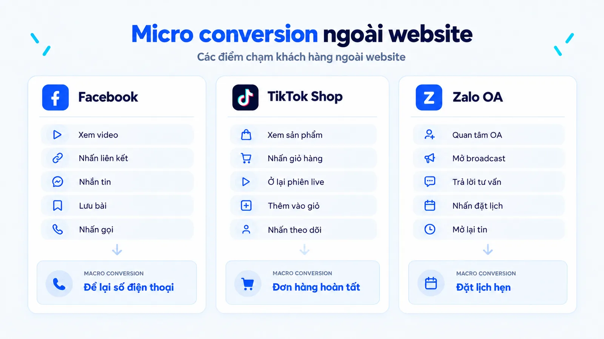
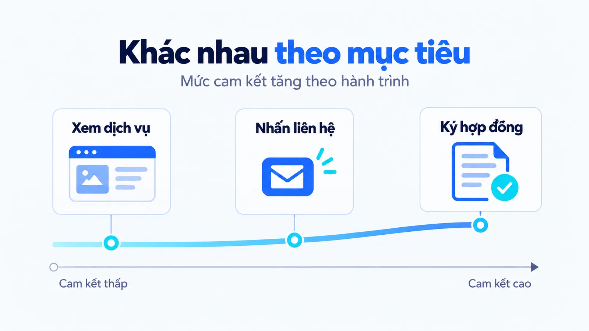
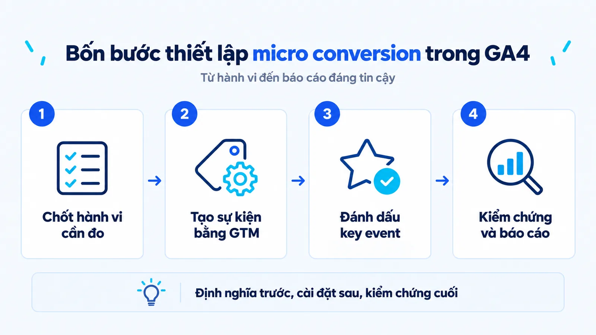
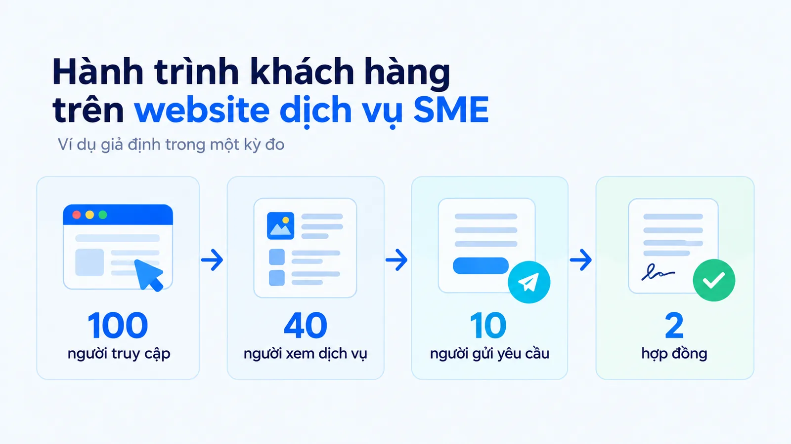
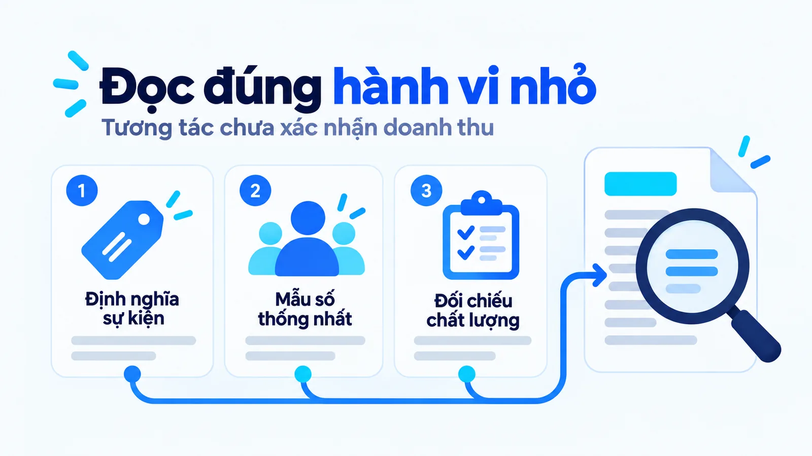
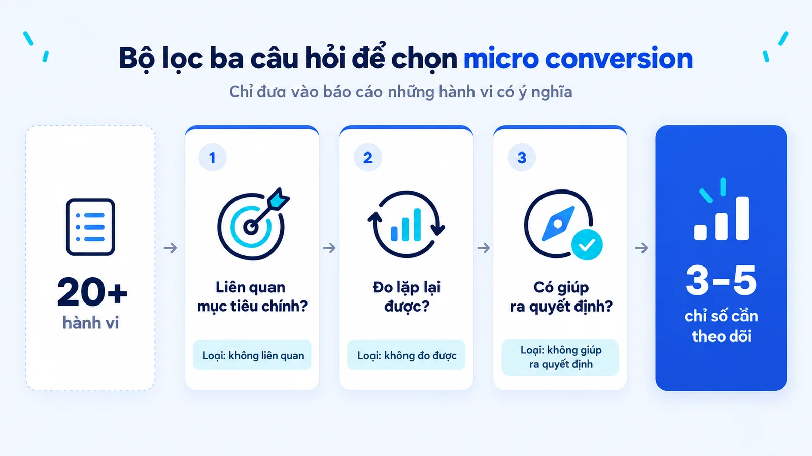

Micro conversion là gì, khác macro conversion thế nào
Micro conversion là hành động nhỏ và đo được của người dùng trên đường tiến tới mục tiêu chính, cho bạn biết họ đã đi tới đâu và đang mắc ở chỗ nào. Tôi là Lê Tuấn Việt, Marketing Leader tại TAKI Group, đã cố vấn hệ thống đo lường và báo cáo cho hơn 200 doanh nghiệp SME. Bài viết này phân biệt hai lớp chuyển đổi, đưa danh sách hành vi theo từng loại hình và quy trình bốn bước để đo trong GA4.
- Đăng ngày
- Cập nhật

Tóm tắt nhanh
- Chuyển đổi vi mô là hành vi nhỏ nằm trên đường tới mục tiêu chính, dùng để khoanh vùng điểm cần sửa chứ không dùng để chứng minh doanh thu.
- Một hành động là micro hay macro conversion tùy theo phạm vi đang đo, không tùy theo bản thân hành động đó.
- Chỉ nên đo 3 đến 5 hành vi cho mỗi mục tiêu chính, mỗi hành vi có điều kiện ghi nhận, đơn vị đếm và kỳ đo được ghi rõ.
- Quy trình đo trong GA4 gồm bốn bước: chốt danh sách hành vi, dựng sự kiện bằng Google Tag Manager, đánh dấu key event và kiểm chứng trước khi lên báo cáo.
Mục lục bài viết13 phần
Micro conversion là gì trong hành trình mua
Micro conversion (chuyển đổi vi mô) là hành động nhỏ và đo được của người dùng, gắn với mục tiêu chính của website và cho biết họ đã tiến tới đâu trên đường đi tới mục tiêu đó. Đây là tín hiệu trung gian dùng để khoanh vùng điểm cần sửa, không phải bằng chứng về doanh thu hay về chất lượng khách hàng.
Một người đọc bài giới thiệu dịch vụ, mở trang bảng giá, quay lại xem trường hợp ứng dụng rồi mới bấm nút liên hệ. Trước khi trở thành khách hàng, họ đã để lại cả chuỗi tín hiệu. Khi những hành động đó gắn với mục tiêu chính và được định nghĩa rõ ràng, bạn theo dõi chúng như chuyển đổi vi mô của hành trình mua.

Một lần cuộn trang chỉ cho biết người dùng đã lướt tới vị trí đó. Công cụ ghi nhận thao tác, không ghi nhận ý định. Người đó có thể đang tìm số điện thoại, đang lướt cho qua, hoặc đang so sánh với ba nhà cung cấp khác.
Tôi chọn hành vi theo một nguyên tắc duy nhất: nó phải trả lời được một câu hỏi tôi đang cần trả lời. Khách có tìm thấy thông tin họ cần không? Họ vướng ở bước nào trước khi gửi yêu cầu? Nếu một chỉ số tăng mà không đổi được quyết định nào, chỉ số đó nên bị xóa khỏi báo cáo.
Ba điều kiện để một hành vi được tính là chuyển đổi vi mô
Không phải mọi thứ công cụ ghi nhận được đều đáng đưa vào báo cáo. Một hành vi chỉ đáng theo dõi khi đủ cả ba điều kiện sau.
- Gắn với mục tiêu chính: Hành vi nằm trên đường tới mục tiêu chính, hoặc giải thích vì sao khách dừng giữa đường.
- Có định nghĩa chặt: Ghi rõ điều kiện ghi nhận, kỳ đo và đơn vị đếm là người hay phiên. Thiếu một trong ba, số của tháng này sẽ không so được với tháng trước.
- Gắn với một hành động: Khi chỉ số thay đổi, phải có người biết cần làm gì tiếp theo. Nếu không ai trả lời được thì đó chỉ là một chỉ số trang trí.
Danh sách micro conversion phổ biến theo loại hình website
Không có danh sách dùng chung cho mọi doanh nghiệp, nhưng có những nhóm hành vi lặp lại theo từng loại hình. Bảng dưới đây là điểm khởi đầu để bạn rút xuống còn 3 đến 5 hành vi thật sự cần đo trong kỳ tới.
| Loại hình | Hành vi trung gian tiêu biểu | Mục tiêu chính |
|---|---|---|
| Thương mại điện tử | Xem trang sản phẩm, thêm vào giỏ, lưu vào yêu thích, bắt đầu thanh toán | Đặt hàng thành công |
| Website dịch vụ B2B | Xem bảng giá, mở biểu mẫu, tải hồ sơ năng lực, nhấn nút gọi | Gửi yêu cầu tư vấn hợp lệ |
| Blog và trang tin | Đọc hết bài, nhấn liên kết nội bộ, chia sẻ bài, mở hộp đăng ký | Đăng ký nhận bản tin |
| Ứng dụng và SaaS | Tạo tài khoản dùng thử, hoàn tất onboarding, xem trang nâng cấp | Nâng cấp lên gói trả phí |

Hãy chú ý cột bên phải. Với một sàn thương mại điện tử, thêm vào giỏ là hành vi trung gian. Với một chiến dịch quảng cáo chỉ nhằm tạo giỏ hàng để chạy tiếp thị lại, chính hành vi đó lại là mục tiêu chính của chiến dịch. Tên gọi đổi theo phạm vi, không đổi theo bản chất hành vi.
Micro conversion ngoài website trên Facebook, TikTok Shop và Zalo
Phần lớn tài liệu về chủ đề này viết cho website. Nhưng với doanh nghiệp SME (doanh nghiệp vừa và nhỏ) tại Việt Nam, phần lớn hành trình mua diễn ra ở nơi khác: người ta xem video trên TikTok, nhắn tin qua Messenger, chốt đơn trong Zalo. Nếu chỉ gắn thẻ vào website, bạn đang đo phần nhỏ nhất của phễu.

Ba nền tảng này không cho bạn dữ liệu nối liền như GA4. Bạn không biết người xem video hôm nay có phải người nhắn tin tuần sau hay không. Hãy đọc chúng như những lớp riêng, mỗi lớp có tử số và mẫu số của riêng nó, và đừng cộng dồn thành một tỷ lệ chung.
Cộng dồn dữ liệu không nối được là cách nhanh nhất để tạo ra một con số không ai kiểm chứng nổi. Khi lập kế hoạch đo lường cho khách hàng, tôi luôn tách phần đo trên website khỏi phần đo trên mạng xã hội ngay từ trang đầu của tài liệu, và ghi rõ nguồn số liệu của từng lớp.
Hai nhóm micro conversion thường gặp
Nielsen Norman Group chia hành vi nhỏ thành hai nhóm, và đây là cách phân loại đáng dùng nhất vì nó quyết định cách bạn đọc dữ liệu.
Hành vi cột mốc
Đây là những bước nằm ngay trong quy trình hoàn thành mục tiêu: mở biểu mẫu trước khi gửi, bắt đầu thanh toán trước khi đặt hàng. Nhóm này đọc theo kiểu tỷ lệ rơi. Nếu 300 người mở biểu mẫu mà chỉ 90 người gửi, bạn có lý do cụ thể để đi kiểm tra trường bắt buộc, thông báo lỗi và cách biểu mẫu chạy trên điện thoại.
Hành vi bổ trợ
Đây là những hành động cho thấy mức quan tâm nhưng không nằm cùng một chuỗi thao tác: lưu bài, đăng ký bản tin, theo dõi kênh, chia sẻ. Nhóm này không đọc theo tỷ lệ rơi. Nếu nhiều người lưu bài, câu hỏi đúng là nội dung đó có hỗ trợ lần tìm hiểu sau không và có kéo đúng nhóm người cần dịch vụ của bạn hay không.
Một lưu ý về sơ đồ
Hành trình thật không tuyến tính. Khách xem bảng giá trước, quay lại đọc bài, hỏi đồng nghiệp, rồi ba tuần sau gọi thẳng số hotline. Sơ đồ cột mốc là cách đơn giản hóa để phân tích, không phải đường đi của mọi khách hàng. Trước khi tin vào sơ đồ, hãy kiểm tra dữ liệu của bạn có nối được các bước lại với nhau hay không.
Phần hỏi đồng nghiệp và chuyển link riêng tư rất khó thấy trong báo cáo, xem thêm bài Dark social là gì.
Micro conversion và macro conversion khác nhau thế nào
Hai khái niệm này được phân biệt bằng vai trò trong mục tiêu đang đo, không bằng một danh sách hành động cố định. Đây là chỗ nhiều báo cáo đi sai ngay từ đầu.
| Tiêu chí | Micro conversion | Macro conversion |
|---|---|---|
| Vai trò | Giải thích mức tiến triển của khách | Xác nhận mục tiêu chính của phạm vi đang được đo |
| Ví dụ website dịch vụ | Xem bảng giá, mở biểu mẫu tư vấn | Gửi yêu cầu tư vấn hợp lệ |
| Ví dụ mục tiêu doanh thu | Yêu cầu tư vấn, nhận báo giá | Ký được hợp đồng |
| Cách sử dụng | Khoanh vùng điểm cần điều tra, hình thành giả thuyết | Đánh giá kết quả kèm chất lượng |
| Rủi ro khi đọc sai | Coi tương tác là doanh thu | Không biết cần sửa ở khâu nào |

Mục tiêu của website là tạo yêu cầu tư vấn, nên gửi biểu mẫu hợp lệ là mục tiêu chính của website. Nhưng khi ban giám đốc đánh giá cả quá trình bán dịch vụ, chính yêu cầu đó lại là bước trung gian trước hợp đồng. Hai cách gọi đều đúng, miễn là báo cáo ghi rõ đang nói trong phạm vi nào.
Hệ quả thực tế: số biểu mẫu trong báo cáo không chứng minh được doanh thu. Bạn vẫn phải xác nhận thông tin liên hệ có thật, nhu cầu có khớp dịch vụ và kết quả xử lý ra sao. Đừng đặt trách nhiệm bán hàng lên một sự kiện website vốn chỉ ghi nhận rằng có người bấm nút. Thông tin khách tự nhập trong biểu mẫu thuộc nhóm dữ liệu khách chủ động chia sẻ, được phân biệt trong bài Zero-party data là gì.
Cách thiết lập micro conversion trong GA4 theo bốn bước
Hiểu khái niệm là một chuyện, có số liệu đọc được là chuyện khác. Bốn bước dưới đây là quy trình tôi dùng cho mọi dự án, và thứ tự của chúng không nên đảo.

Bước 1: Chốt danh sách hành vi cần đo
Viết ra 3 đến 5 hành vi gắn trực tiếp với mục tiêu chính. Mỗi dòng ghi đủ ba thứ: điều kiện ghi nhận, đơn vị đếm và câu hỏi mà hành vi đó trả lời. Bước này làm trên giấy hoặc trên file, chưa động vào công cụ đo lường nào.
Đầu ra: bảng 3 đến 5 dòng, mỗi dòng đủ chặt để người khác đếm lại ra cùng kết quả.
Bước 2: Dựng sự kiện bằng Google Tag Manager
Tạo trigger cho từng hành vi, đặt tên sự kiện theo một quy ước thống nhất và gắn tham số phân biệt vị trí, thiết bị, nguồn truy cập. Quy ước tên đặt sai từ đầu sẽ theo bạn suốt nhiều năm.
Đầu ra: mỗi hành vi có một sự kiện chạy được trên môi trường thật, đúng quy ước tên.
Bước 3: Đánh dấu key event trong GA4
Chỉ đánh dấu cho hành vi thật sự quan trọng với doanh nghiệp. Việc đánh dấu giúp báo cáo dễ đọc và đẩy dữ liệu sang Google Ads, nhưng không xác nhận chất lượng khách hàng tiềm năng và không tạo ra doanh thu.
Đầu ra: danh sách key event gọn, mỗi mục có người đọc và một quyết định gắn kèm.
Bước 4: Kiểm chứng rồi mới lên báo cáo
Dùng DebugView xác nhận sự kiện bắn đúng một lần và đúng điều kiện, rồi mới dựng báo cáo trong Looker Studio với tử số, mẫu số và kỳ đo ghi rõ cho từng tỷ lệ.
Đầu ra: báo cáo đã đối chiếu dữ liệu thô, mọi tỷ lệ ghi rõ tính trên người hay trên phiên.
Bước bốn hay bị bỏ nhất và cũng gây thiệt hại lớn nhất. Một sự kiện bắn hai lần sẽ tạo ra báo cáo đẹp nhưng sai, thường không ai phát hiện trong nhiều tháng. Trong GA4, sự kiện ghi nhận hành động, còn key event là sự kiện được đánh dấu vì quan trọng với doanh nghiệp.
Ví dụ đo chuyển đổi vi mô cho một doanh nghiệp dịch vụ
Con số dễ hiểu hơn lý thuyết. Dưới đây là dữ liệu rút gọn của một khách hàng tôi từng đồng hành, đã làm tròn về tỷ lệ 100 để dễ đọc.
Doanh nghiệp dịch vụ, khoảng 20 nhân sự
Lượt xem trang dịch vụ tăng 62% nhưng số yêu cầu tư vấn đứng yên
Trong một kỳ đo: 100 người truy cập, 40 người xem trang dịch vụ, 10 người gửi yêu cầu, 2 người ký hợp đồng. Giả định là dữ liệu đã nối được cùng một nhóm người và mỗi bước chỉ đếm một lần cho mỗi người.
- 40%
- Truy cập có xem dịch vụ
- 25%
- Xem dịch vụ có gửi yêu cầu
- 20%
- Yêu cầu thành hợp đồng

Tỷ lệ gửi yêu cầu trên tổng người truy cập là 10%. Tỷ lệ gửi yêu cầu trong nhóm đã xem trang dịch vụ là 25%. Hai con số này trả lời hai câu hỏi khác nhau. Đặt cạnh nhau rồi kết luận 25% hiệu quả hơn 10% là sai về mặt logic, vì mẫu số không giống nhau.
Tháng sau, lượt xem trang dịch vụ tăng 62% nhưng số yêu cầu vẫn đứng ở mức 10. Chúng tôi kiểm tra ba khả năng: nội dung chưa đủ rõ, nhóm truy cập đã đổi, hoặc khách chuyển sang gọi điện. DebugView cho thấy trường bắt buộc thứ ba trong biểu mẫu báo lỗi trên Safari phiên bản di động.
Dữ liệu hành vi nhỏ không chỉ ra nguyên nhân, nó chỉ khoanh vùng để bạn biết nên đi soi ở đâu. Một tình huống khác cũng hay gặp: yêu cầu tăng mạnh nhưng hợp đồng đứng yên. Lúc đó hãy nhìn vào chất lượng yêu cầu và quy trình tư vấn.
Cách đọc dữ liệu micro conversion không nhầm đơn vị
Đây là phần kỹ thuật nhất của bài, và cũng là phần mà phần lớn báo cáo Marketing tại Việt Nam đang làm sai.

Chọn mẫu số trước khi tính tỷ lệ
Trước khi tính bất kỳ tỷ lệ chuyển đổi nào, hãy xác định bốn thứ: hành động là gì, điều kiện ghi nhận ra sao, kỳ đo kéo dài bao lâu và đơn vị đếm là người hay phiên. Một người bấm nút liên hệ ba lần tạo ra ba lượt sự kiện, nhưng vẫn chỉ là một người.
- 01Tỷ lệ theo ngườiSố người thực hiện hành động chia cho số người thuộc nhóm đủ điều kiện.
- 02Tỷ lệ theo phiênCả tử số và mẫu số đều tính theo phiên, đúng định nghĩa phiên bạn đã chọn.
- 03Lượt nhấp chia số ngườiKết quả là số lượt nhấp trung bình mỗi người, không phải tỷ lệ người chuyển đổi.
Ba nhóm sự kiện trong GA4 cần phân biệt
Google chia sự kiện thành các nhóm có cách bật và cách dùng khác nhau. Biết mình đang đọc nhóm nào giúp bạn không nhầm giữa dữ liệu có sẵn và dữ liệu phải tự dựng.
- Thu thập tự động: GA4 ghi nhận sẵn, bạn không phải cấu hình thêm gì cho nhóm này.
- Đo lường nâng cao: Bật ngay trong giao diện, gồm cuộn trang, nhấp ra ngoài, tìm kiếm nội bộ và xem video.
- Khuyến nghị và tùy chỉnh: Bạn tự dựng lấy, và phần lớn hành vi đáng đo đều nằm ở nhóm tùy chỉnh này.
Nên đo bao nhiêu micro conversion là đủ
Câu trả lời ngắn là 3 đến 5 chỉ số cho mỗi mục tiêu chính. Nhiều hơn thì không ai đọc, ít hơn thì không đủ khoanh vùng. Nhưng con số không quan trọng bằng cách bạn chọn.

Cho mọi hành vi mà công cụ ghi nhận được đi qua ba câu hỏi. Một, hành vi này liên quan gì tới mục tiêu chính? Hai, định nghĩa đã đủ chặt để tháng sau đếm lại ra cùng một cách chưa? Ba, nếu chỉ số này thay đổi, bạn sẽ làm gì khác đi?
Rớt bất kỳ câu nào thì loại. Thực tế, danh sách hơn 20 hành vi thường rút xuống còn 4 đến 5 sau vòng lọc này. Bạn có thể đọc thêm các bài về đo lường và vận hành trong chủ đề Marketing của Góc kiến thức.
Giới hạn của tín hiệu trung gian khi đánh giá hiệu quả
Một lượt nhấp gọi không phải là một cuộc gọi. Nó chỉ cho biết ai đó đã mở chức năng gọi trên máy. Cuộc gọi có thể không kết nối, người nhận có thể không bắt máy, và nội dung trao đổi có thể chẳng liên quan tới dịch vụ bạn bán.
Mỗi bước trong chuỗi đó cần một nguồn xác nhận riêng. Tương quan cũng không phải là tác động. Nhóm người đọc trang bảng giá có tỷ lệ mua cao hơn, điều đó đúng. Nhưng rất có thể họ đọc bảng giá vì đã có nhu cầu rõ từ trước, chứ không phải bảng giá tạo ra nhu cầu.
Cách duy nhất để biết là chạy thử nghiệm có nhóm đối chứng. Ngoài ra, dữ liệu của bạn luôn thiếu một phần vì những lý do sau:
- Cấu hình đo lường sai hoặc chưa phủ hết các trang quan trọng.
- Người dùng từ chối quyền thu thập, khiến một phần hành vi không được ghi nhận.
- Khách xem trên điện thoại rồi mua trên máy tính, và bạn đếm thành hai người.
- Khách thấy bài trên website rồi nhắn qua Zalo, hợp đồng ký ngoài hệ thống.
- Số lượng nhỏ khiến tỷ lệ nhảy mạnh. Với 10 yêu cầu, thêm 1 yêu cầu đã là tăng 10%.
Micro conversion trong tối ưu chuyển đổi và A/B testing
Chuyển đổi vi mô có một vai trò mà mục tiêu cuối không thay thế được: nó cho tín hiệu đủ nhanh để chạy thử nghiệm. Nếu chỉ đo hợp đồng ký, với 2 hợp đồng mỗi tháng thì phải chờ cả năm mới đủ dữ liệu để kết luận. Nếu đo tỷ lệ mở biểu mẫu, bạn có kết quả sau hai tuần.
Đổi lại, bạn phải chấp nhận một rủi ro: một thay đổi làm tăng tín hiệu trung gian vẫn có thể làm giảm kết quả cuối. Rút biểu mẫu từ 7 trường xuống 3 trường sẽ tăng số lượt gửi, đồng thời đưa vào nhiều yêu cầu không đủ điều kiện và làm đội bán hàng mất thời gian.
Vì vậy mọi thử nghiệm dựa trên tín hiệu trung gian đều phải có một vòng đối chiếu ngược lại với kết quả cuối cùng, dù vòng đó đến chậm hơn. Bạn có thể xem cách tôi áp dụng nguyên tắc này trong các dự án đã triển khai cho doanh nghiệp y tế, nhà hàng và bán lẻ.
Câu hỏi thường gặp về micro conversion
Có cần theo dõi mọi lượt nhấp trên website không?
Không. Chỉ theo dõi hành vi giúp giải thích mục tiêu chính. Một hành vi chỉ đáng đo khi có định nghĩa rõ và có một quyết định cần dùng tới nó. Theo dõi tất cả sẽ tạo ra hàng chục chỉ số không ai kiểm tra.
Một hành động có thể vừa là micro vừa là macro conversion không?
Có, khi phạm vi đo khác nhau. Yêu cầu tư vấn là mục tiêu chính của website và là bước trung gian của hành trình tới hợp đồng. Cách xử lý duy nhất là ghi rõ phạm vi ngay trên báo cáo.
Chuyển đổi vi mô tăng có đủ căn cứ để tăng ngân sách quảng cáo không?
Chưa đủ. Bạn cần xem thêm chất lượng của hành vi đó, kết quả ở bước phía sau và những thay đổi trong cách đo giữa hai kỳ. Dùng tín hiệu trung gian để thử nghiệm thì được, nhưng vẫn phải đối chiếu với mục tiêu cuối trước khi quyết định ngân sách.
Chuyển đổi vi mô khác gì với vanity metric?
Chuyển đổi vi mô gắn với mục tiêu chính và dẫn tới một hành động cụ thể. Vanity metric trông đẹp trong báo cáo nhưng không đổi được quyết định nào, ví dụ tổng lượt xem trang hay tổng người theo dõi. Cùng một chỉ số có thể đáng đo ở doanh nghiệp này và vô nghĩa ở doanh nghiệp khác, tùy vào việc nó có dẫn tới quyết định nào hay không.
Nên đo theo người hay theo phiên?
Theo người nếu bạn muốn biết bao nhiêu khách đã làm việc đó. Theo phiên nếu bạn muốn biết hành vi xuất hiện với tần suất thế nào trong mỗi lần truy cập. Điều bắt buộc là tử số và mẫu số phải cùng một đơn vị, và cả báo cáo dùng nhất quán một lựa chọn.
Kết luận
Chọn hành vi để đo luôn bắt đầu từ câu hỏi bạn cần trả lời, không bắt đầu từ danh sách mà công cụ ghi nhận được. Khi mỗi hành vi nhỏ có vai trò rõ ràng, có định nghĩa chặt và luôn được đọc cùng kết quả chính, báo cáo sẽ trả lời được câu hỏi quan trọng nhất: bước nào cần kiểm tra tiếp theo.
Còn nếu các chỉ số trung gian chỉ để làm báo cáo dài thêm, bỏ hẳn đi sẽ tốt hơn. Nếu bạn muốn xem cách tôi xây hệ thống đo lường cho từng mô hình kinh doanh, phần năng lực chuyên môn trên trang hồ sơ có mô tả chi tiết hơn, và Góc kiến thức là nơi tôi lưu lại các bài phân tích cùng chủ đề.